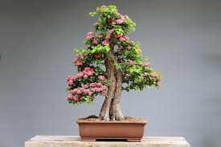
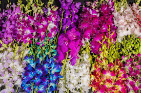
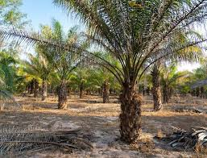
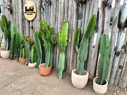
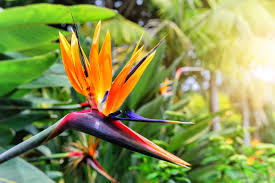
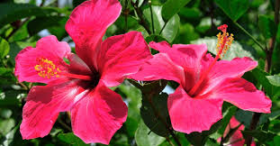
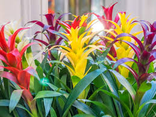
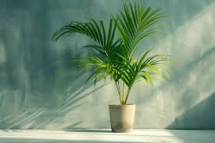

🌍 Plantas Importadas
Descubre especies únicas traídas de diferentes partes del mundo. Añade un toque exótico y exclusivo a tu jardín.

Bonsái Japonés
Elegancia y tradición desde Japón.

Orquídea Tailandesa
Exótica y vibrante, ideal para interiores.

Palmera Africana
Perfecta para dar un aire tropical.

Cactus Mexicano
Resistente y decorativo para cualquier espacio.

Ave del Paraíso
Elegancia exótica, floración espectacular, ideal para jardines y patios.

Hibisco
Arbusto florido y vibrante, ideal para setos y bordes de jardín.

Bromelia
Sorprendente y duradera, toque de color para jardines o macetas

Palmera Areca
Elegancia tropical, purifica el aire, perfecta para interiores y exteriores.